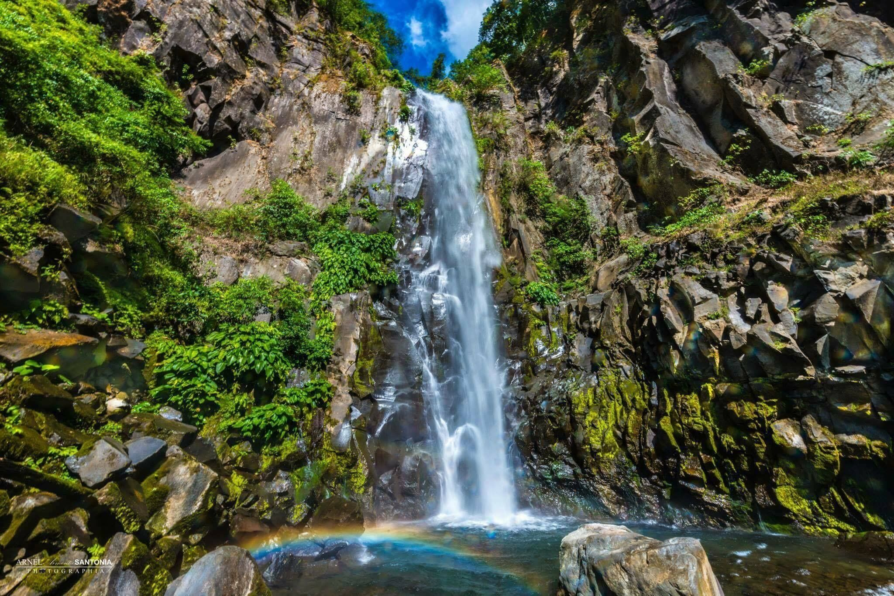
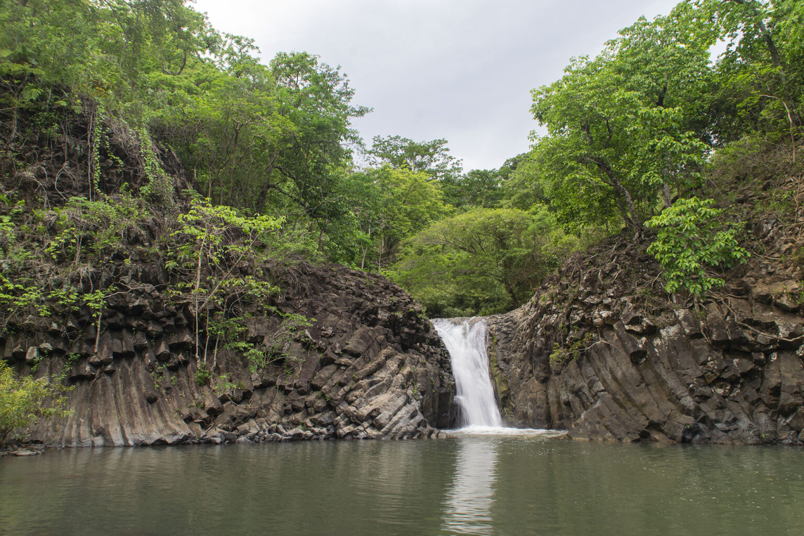
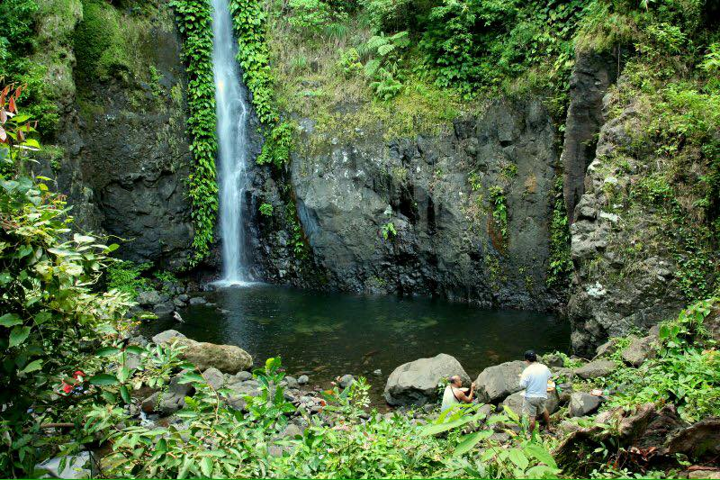

Misty sprays, hidden pools, and refreshing trails.

Located within lush forest trails, this waterfall is famous for its misty spray. The name "Ambon-ambon" literally means drizzle, describing the refreshing atmosphere it creates.

Sound at the foot of Mount Samat, near the Shrine of Valor. It is a scenic spot that combines natural beauty with the historical significance of the surrounding area.

One of the tallest waterfalls in Bataan, hidden deep in the forest. It offers a rugged trek and is known for its impressive multi-tiered cascades and pristine environment.